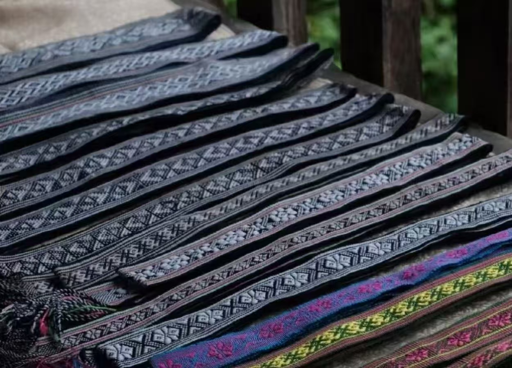
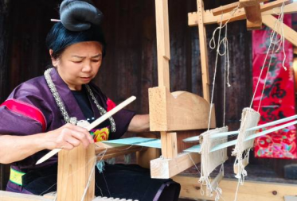
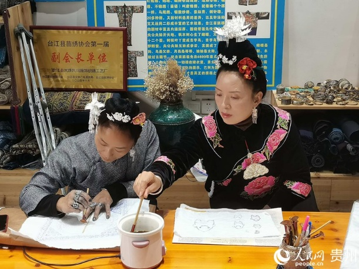

一据考古与文献记载，苗锦最早出现于公元前5世纪苗族聚居地，隋唐时期已形成基本工艺；宋代《溪蛮丛笑》、明代《黔记》等文献均描述了苗族织锦技艺。
20世纪90年代前，以母传女的方式世代相传，盛行不衰；明清时期，苗锦成为婚嫁礼品（如外婆赠外孙背带），并随苗族迁徙传播至云贵高原等地。

主要采用当地所产的蚕丝、苎麻、木棉等纤维染彩编织形成。染料多采用天然植物提取，如蓝靛、红花、紫草等。
图案丰富多样，包括动物纹、植物纹、天象纹、器物纹、几何纹等。纹样以寓意吉祥的花草、动物排列在几何形框架内，多用小型几何纹样。
挑织：将牵好的经线上筘，用光滑竹片按照花纹需要向经线逐一挑通，然后掷梭引进一根纬线，拉筘拍紧。主要流行于贵州台江、剑河、凯里等地。
机织：使用织布机，综线至少五个，每个综线都联着一块踩板，脚踏踩板牵动综线交错上下分开经纱，依次进行织造。 编织：以手代替挑板或综线来交错上下分开经线，可随身携带操作，适合宽一寸以下而经线较粗的锦带。采用"通经断纬"法，彩纬充分覆盖在织物表面，正面色彩艳丽。制作过程极为精细耗时，即使是熟练工匠，每天也只能织出寸许，因此产量稀少且价格昂贵。
以线为媒，以手为筑，择一事终老，守一生初心

潘英（1956年5月－），苗族，贵州省凯里市舟溪镇曼洞村青曼苗寨村民，苗族织锦技艺传承人。她自2016年创立苗服织锦刺绣店以来，通过开展技艺培训等方式推动非遗传承，其工坊既是生产场所也是文化展示窗口 。2025年3月12日入选第六批国家级非物质文化遗产代表性传承人名单 ，其制作的"舟溪式"苗族服饰以中短裙和繁复头饰著称，被誉为"穿在身上的史书" 。
2025年3月12日，经文化和旅游部认定，潘英入选第六批国家级非物质文化遗产代表性传承人名单 。此前她于2024年10月已拥有省级传承人身份 。
针对"年轻人不愿学、老年人记不住"的传承困境，潘英采取以下措施：将苗族织锦工艺精细复杂，每天仅能织五厘米左右，完成一条背带需一个多月；建立标准化生产流程并培养传承人；推动织锦产品商业化转型

张艳梅，1977年生，贵州省黔东南苗族侗族自治州台江县人，苗族刺绣传承人。3岁时因患脊髓灰质炎导致双下肢残疾，7岁随母亲学习苗绣，掌握多种刺绣技法和染布工艺。她于20世纪90年代从北京返回家乡，继承母亲技艺，致力于苗绣的传承与创新，带动当地残疾妇女灵活就业。2024年，其作品亮相巴黎残奥会，并参与苏格兰威士忌限定包装设计。
张艳梅深入黔东南地区收集上百片苗族绣花母本，最老的母本已有200多年历史。她采用订单式生产，带动9个乡镇30余名残疾绣娘灵活就业，月均收入近2000元。她还开展苗绣培训，三年累计培养残疾绣娘/郎150余人。通过电商直播、线上教学等方式拓展市场，产品远销海内外。
张艳梅坚持“做苗族人自己的东西”，致力于将苗绣技艺转化为残疾人谋生的技能，推动“活态传承”，助其“活得漂亮且自信”。
市场规模持续扩容，内需为核心驱动力
2024年中国苗绣（含苗锦）产业市场规模达120亿元，2025年预计增至150亿元（同比增长12%），其中国内市场消费占比超70%，传统服饰类（占比45%）、家居装饰类（占比30%）是主力品类；出口额2024年约8亿美元，2025年预计达10亿元人民币（同比增长20%），东南亚、欧洲、美国是主要海外市场，仅东南亚就贡献苗绣出海90%的销售额。
核心人群：
90后与00后是绝对主力，在淘宝和抖音的非遗消费人群中占比均过半。
• 他们既有文化认同，也追求个性表达与独特体验需求趋势：
淘宝非遗连续2年成交额破千亿，且保持双位数增长。
• 苗绣：2025年天猫618期间商品同比增长42%。 • 抖音电商：一年售出非遗产品超65亿单。销售渠道线上主导，线下文旅联动补充
线上渠道已成核心销售路径，2024年线上销售额占比60%，淘宝、京东、拼多多等电商平台是主阵地，部分企业还通过直播带货（如吉首湘苗锦服装店）、跨境电商（B2C模式）拓展市场，单厂线上月订单稳定在2000单左右；线下占比40%，集中在旅游景区商店、民族工艺品专卖店，依托文旅场景实现“体验式销售”，如云南、广西等地借游客流量带动苗锦产品作为纪念品销售。
主要问题：
• 产品同质化与价值认知偏差。
• 国际市场拓展仍存短板。
• 区域发展不均衡，供应链效率待提升。
优化建议：
• 内容深耕，讲好品牌故事。
• 产品创新，拥抱当代生活。
• 多元触达，打通线上线下。